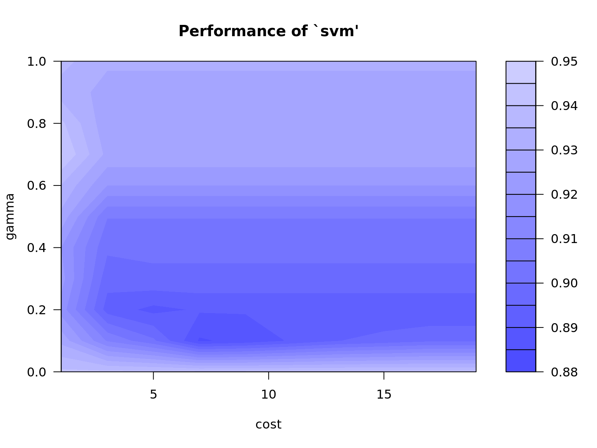

Overfitting
library(pander)
library(e1071)
## First 500 digits in pi
dta = c(3, 1, 4, 1, 5, 9, 2, 6, 5, 3, 5, 8, 9, 7, 9, 3, 2, 3, 8, 4, 6, 2, 6, 4, 3, 3, 8,
3, 2, 7, 9, 5, 0, 2, 8, 8, 4, 1, 9, 7, 1, 6, 9, 3, 9, 9, 3, 7, 5, 1, 0, 5, 8, 2,
0, 9, 7, 4, 9, 4, 4, 5, 9, 2, 3, 0, 7, 8, 1, 6, 4, 0, 6, 2, 8, 6, 2, 0, 8, 9, 9,
8, 6, 2, 8, 0, 3, 4, 8, 2, 5, 3, 4, 2, 1, 1, 7, 0, 6, 7, 9, 8, 2, 1, 4, 8, 0, 8,
6, 5, 1, 3, 2, 8, 2, 3, 0, 6, 6, 4, 7, 0, 9, 3, 8, 4, 4, 6, 0, 9, 5, 5, 0, 5, 8,
2, 2, 3, 1, 7, 2, 5, 3, 5, 9, 4, 0, 8, 1, 2, 8, 4, 8, 1, 1, 1, 7, 4, 5, 0, 2, 8,
4, 1, 0, 2, 7, 0, 1, 9, 3, 8, 5, 2, 1, 1, 0, 5, 5, 5, 9, 6, 4, 4, 6, 2, 2, 9, 4,
8, 9, 5, 4, 9, 3, 0, 3, 8, 1, 9, 6, 4, 4, 2, 8, 8, 1, 0, 9, 7, 5, 6, 6, 5, 9, 3,
3, 4, 4, 6, 1, 2, 8, 4, 7, 5, 6, 4, 8, 2, 3, 3, 7, 8, 6, 7, 8, 3, 1, 6, 5, 2, 7,
1, 2, 0, 1, 9, 0, 9, 1, 4, 5, 6, 4, 8, 5, 6, 6, 9, 2, 3, 4, 6, 0, 3, 4, 8, 6, 1,
0, 4, 5, 4, 3, 2, 6, 6, 4, 8, 2, 1, 3, 3, 9, 3, 6, 0, 7, 2, 6, 0, 2, 4, 9, 1, 4,
1, 2, 7, 3, 7, 2, 4, 5, 8, 7, 0, 0, 6, 6, 0, 6, 3, 1, 5, 5, 8, 8, 1, 7, 4, 8, 8,
1, 5, 2, 0, 9, 2, 0, 9, 6, 2, 8, 2, 9, 2, 5, 4, 0, 9, 1, 7, 1, 5, 3, 6, 4, 3, 6,
7, 8, 9, 2, 5, 9, 0, 3, 6, 0, 0, 1, 1, 3, 3, 0, 5, 3, 0, 5, 4, 8, 8, 2, 0, 4, 6,
6, 5, 2, 1, 3, 8, 4, 1, 4, 6, 9, 5, 1, 9, 4, 1, 5, 1, 1, 6, 0, 9, 4, 3, 3, 0, 5,
7, 2, 7, 0, 3, 6, 5, 7, 5, 9, 5, 9, 1, 9, 5, 3, 0, 9, 2, 1, 8, 6, 1, 1, 7, 3, 8,
1, 9, 3, 2, 6, 1, 1, 7, 9, 3, 1, 0, 5, 1, 1, 8, 5, 4, 8, 0, 7, 4, 4, 6, 2, 3, 7,
9, 9, 6, 2, 7, 4, 9, 5, 6, 7, 3, 5, 1, 8, 8, 5, 7, 5, 2, 7, 2, 4, 8, 9, 1, 2, 2,
7, 9, 3, 8, 1, 8, 3, 0, 1, 1, 9, 4, 9, 1, 2)
## Create 5 variables to based on the lagged value of the ith digit
dta = data.frame(y = dta)
dta$x1 = NA; dta$x2 = NA; dta$x3 = NA; dta$x4 = NA; dta$x5 = NA
for (i in 2:500) {
dta$x1[i] = dta$y[i-1]
}
for (i in 3:500) {
dta$x2[i] = dta$y[i-2]
}
for (i in 4:500) {
dta$x3[i] = dta$y[i-3]
}
for (i in 5:500) {
dta$x4[i] = dta$y[i-4]
}
for (i in 6:500) {
dta$x5[i] = dta$y[i-5]
}
head(dta) y x1 x2 x3 x4 x5
1 3 NA NA NA NA NA
2 1 3 NA NA NA NA
3 4 1 3 NA NA NA
4 1 4 1 3 NA NA
5 5 1 4 1 3 NA
6 9 5 1 4 1 3## Remove NA
dta = dta[6:500,]
## Create Factors out of the variables
dta[] = lapply(dta, factor)
## Break up the data into the training and testing sets
train = dta[1:475, ]
test = dta[476:495, ]
## Tune an SVM Model
mdl.svm = tune(svm, y ~ ., data = train,
ranges = list(
cost = seq(1, 20, 2),
gamma = seq(0, 1, .1))
)
plot(mdl.svm)
best.cost = mdl.svm$best.parameters[1]
best.gamma = mdl.svm$best.parameters[2]
mdl.svm = svm(y ~ ., data = train, cost = best.cost, gamma = best.gamma,
probability = TRUE)
## Predict the testing set
tmp = predict(mdl.svm, test, probability = TRUE)
results.svm = data.frame(actual = test$y, predicted = tmp)
results.svm$Result = FALSE
results.svm$Result[which(results.svm$actual == results.svm$predicted)] = TRUE
## create Predict the training set
train.results.svm = data.frame(actual = train$y, pred = predict(mdl.svm, train))
train.results.svm$Result = FALSE
train.results.svm$Result[train.results.svm$actual == train.results.svm$pred] = TRUE
## Aggregate results
results = list(
Train.Incorrect = round(table(train.results.svm$Result)[[1]]/475, 3),
Train.Correct = round(table(train.results.svm$Result)[[2]]/475, 3),
Test.Incorrect = round(table(results.svm$Result)[[1]]/20, 3),
Test.Correct = round(table(results.svm$Result)[[2]]/20, 3)
)
pandoc.table(results, split.tables = Inf)
-----------------------------------------------------------------
Train.Incorrect Train.Correct Test.Incorrect Test.Correct
----------------- --------------- ---------------- --------------
0.147 0.853 0.95 0.05
-----------------------------------------------------------------